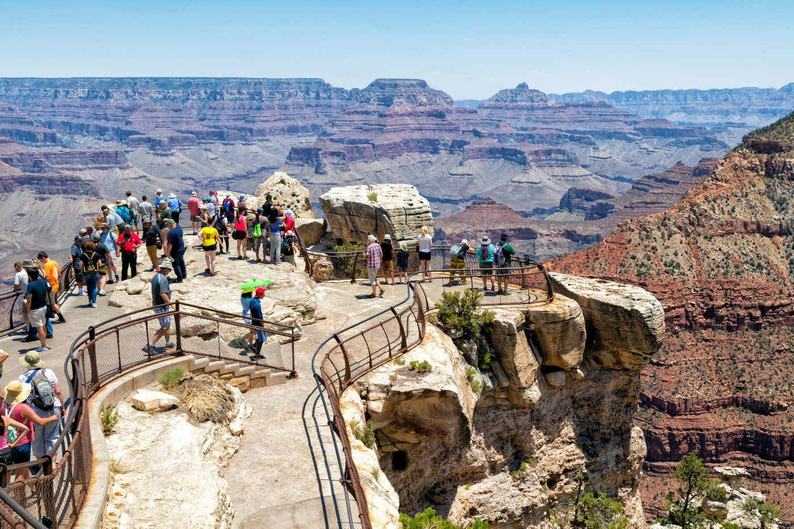
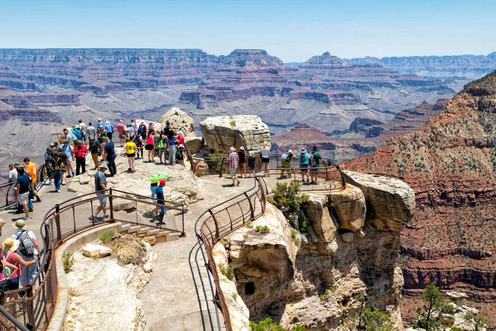

Ebenalp Mountain, Switzerland


Geographical Location: Central Europe
Ebenalp Mountain graces Switzerland's Appenzell Alps with rugged beauty. Hikers explore well-marked trails, and at the peak, the iconic Ebenalp Cliff offers panoramic views. Thrill-seekers can paraglide from its heights, while the mountaintop Berggasthaus Schäfler provides a unique stay immersed in alpine charm. For a memorable dining experience, the side-of-the-mountain Aescher Restaurant offers local cuisine amidst stunning vistas. Ebenalp Mountain is a breathtaking destination that blends natural splendor with exciting activities and culinary delights, catering to adventurous spirits.
Just a stone's throw away from the majestic Ebenalp Mountain in Switzerland's Appenzell Alps, Seealpsee Lake stands as a serene counterpart to the rugged heights above. This picturesque alpine lake is a reward for those who embark on the hiking trails around Ebenalp. The crystal-clear waters of Seealpsee Lake beautifully reflect the towering peaks and lush meadows, creating an enchanting panorama. Amidst this natural wonder lies a charming lakeside restaurant where visitors can savor local delicacies while gazing upon the breathtaking scenery.
Photo Gallery


Grand Canyon


Geographical Location: North America
The Grand Canyon is a natural geological formation located in the state of Arizona. It is a steep-sided canyon carved by the Colorado River over millions of years. The canyon is known for its size, vibrant and varied colors, and intricate rock formations. It is one of the most famous and visited natural landmarks in the United States and around the world.
Though the Grand Canyon is one of the most iconic places to travel, there are many dangers that come from such a terrain. Between 2010 and 2020, 134 have died, mainly due to extreme heat. You can see below, examples of people getting hurt due to the heat and carelessness. A Canadian hiker has died at the Grand Canyon; reallifenewsandstories
Photo Gallery

 



Ha Long Bay, Vietnam


Geographical Location: Asia
Ha Long Bay is a UNESCO world heritage site and a popular tourist destination in northeast Vietnam. The bay is famous for its crystal clear emerald colored waters dotted with limestone mountains that rise up from the water. Many tourists visit and take boat tours around the islands that tend to be named after their peculiar shape. For instance, tourists can take kayak expeditions around the Teapot islets, a set of islands shaped like teapots, or be rowed around Stone Dog, which appears to be shaped like a dog.
The Ha Long Bay region is popular for scuba diving, rock climbing and hiking, particularly in mountainous Cát Bà National Park. The nearest city is Hai Phong, which is approximately 75 km away. It is easier to reach Ha Long Bay by boat because the journey from Hai Phong to Ha Long Bay can take nearly 2.5 hours.
Photo Gallery


Jungfrau, Switzerland


Geographical Location: Europe
Jungfrau is a city in Switzerland known for its mountain summits nicknamed the “top of Europe.” It is very famous also for its railway created in 1912 that can bring you to a height of 3454m. At the summit there are outstanding views where you can see the whole city and beyond.
The scenery consists of valleys, waterfalls, rock walls, and snow peaks. When visiting, it is vital to go on a day with good weather because it enhances the quality of the views. Hiking is very popular at short trails called Grutschalp and Murren. A very common tourist attraction is also exploring the Lauterbrunnen valley.
Photo Gallery


Machu Picchu, Peru


Geographical Location: South America
Machu Picchu is an ancient Incan citadel located in the Andes Mountains of Peru, South America. It is renowned for its breathtaking beauty, architectural ingenuity, and historical significance. Believed to have been built in the 15th century during the height of the Inca Empire, Machu Picchu served as a royal estate or religious retreat for the Incan ruler Pachacuti.
Machu Picchu's remote location and mysterious abandonment in the decades following its construction have contributed to its status as a UNESCO World Heritage Site and one of the New Seven Wonders of the World. The site is characterized by its well-preserved stone structures, including temples, plazas, residential buildings, and intricate terraces carved into the mountainside. The precise construction methods used to build Machu Picchu without the use of mortar have puzzled archaeologists for decades. The entire complex is surrounded by stunning panoramic views of the surrounding valleys and mountains.
Photo Gallery